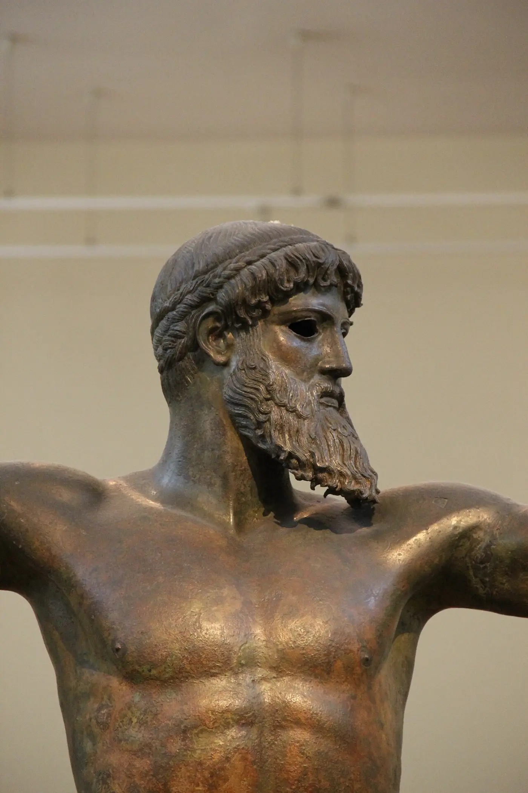

希腊众神 · 波塞冬：分家兄弟与十年追杀

同一位神，在《伊利亚特》里帮希腊人筑墙破敌，到《奥德赛》里却成了把奥德修斯按在海里十年的头号反派。转变只有一个理由：儿子。
题图：阿尔忒弥西昂青铜像（宙斯或波塞冬），约公元前 460 年，雅典国家考古博物馆藏。摄影：Gary Todd，CC0，经维基共享资源。
抽签输了的那一位
提坦之战后三兄弟抽签：宙斯得天空、哈得斯得冥界、波塞冬得海洋。他不是宙斯的下属，而是分家时抽到海的兄弟——这层关系在荷马里处处漏出来：卷十五他公然违抗宙斯的禁令下场助战，还放话"我们三兄弟分天下，别拿长子身份压我"；卷七又因为特洛伊城墙是阿波罗与自己亲手所筑、却被希腊人挖了壕沟而耿耿于怀。他的称号"大地的摇撼者"（地震之神）、"黑发者"，标志是三叉戟、马与海豚，居所在埃盖的海底宫殿。
史诗里他的两面
《伊利亚特》：他在卷十三化身为老将卡尔卡斯鼓动希腊人，亲自为埃阿斯注入力量；卷二十诸神混战时站希腊一边，却按约定不与阿波罗动手——神与神之间也讲"分家协议"。
《奥德赛》：卷一开篇，众神议事决定放奥德修斯回家，唯独波塞冬缺席（去埃塞俄比亚赴宴）；此后他一路掀浪、击碎木筏、把费埃克斯人的送归神船化成石山。全部怨气的起点是卷九：奥德修斯刺瞎了独眼巨人波吕斐摩斯，而那是波塞冬与海中仙女托俄萨的儿子。巨人临瞎时向父亲祈祷"别让他回家"——这句祷告，被父亲认真执行了十年。
故事：海底的王与地上的城
波塞冬的神话总带"争夺地盘"的味道：与雅典娜争雅典的守护权，他拿三叉戟击出咸泉，雅典娜种下橄榄树，公民判她赢（卫城厄瑞克忒翁神庙的盐泉遗迹即指此事）；与赫拉、雅典娜一度合谋捆缚宙斯；与阿波罗曾因触怒宙斯被罚去给特洛伊王拉俄墨冬筑城墙，事后赖账，他便派海怪蹂躏特洛伊——"特洛伊城墙是神筑的"这个设定，正来自这桩旧怨，也解释了卷七他为何对城墙被冒犯如此敏感。他还有一桩著名联姻：娶海中仙女安菲特里忒（她逃跑，被海豚劝回），生子特里同。
神学与海
希腊人航海、捕鱼、殖民全靠他，却从不"喜欢"他：海是最不讲理的力量，正如他本人的脾气。在《奥德赛》的结构里，波塞冬代表的是无法用智谋解决的那部分世界——奥德修斯能骗过巨人、能绑桅过塞壬、能忍辱扮乞丐，唯独说服不了海。直到他踏上伊萨卡、把桨扛进内陆、向波塞冬献祭（卷十一先知忒瑞西阿斯预告的终局），这场人与海的账才算结清。
评论已关闭